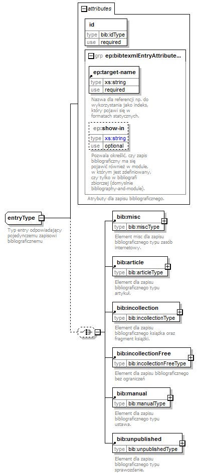

| diagram |  | ||||||||||||||||||||||||||||
| namespace | http://bibtexml.sf.net/ | ||||||||||||||||||||||||||||
| children | bib:misc bib:article bib:incollection bib:incollectionFree bib:manual bib:unpublished | ||||||||||||||||||||||||||||
| used by |
|
||||||||||||||||||||||||||||
| attributes |
|
||||||||||||||||||||||||||||
| annotation |
|
||||||||||||||||||||||||||||
| source | <xs:complexType name="entryType"> <xs:annotation> <xs:documentation>Typ entry odpowiadający pojedynczemu zapisowi bibliograficznemu</xs:documentation> </xs:annotation> <xs:choice minOccurs="0"> <xs:element ref="bib:misc"/> <xs:element ref="bib:article"/> <xs:element ref="bib:incollection"/> <xs:element ref="bib:incollectionFree"/> <xs:element ref="bib:manual"/> <xs:element ref="bib:unpublished"/> </xs:choice> <xs:attribute name="id" type="bib:idType" use="required"/> <xs:attributeGroup ref="ep:bibtexmlEntryAttributesGroup"/> </xs:complexType> |
| type | idType | |||||||||||||
| properties |
|
|||||||||||||
| facets |
|
|||||||||||||
| source | <xs:attribute name="id" type="bib:idType" use="required"/> |